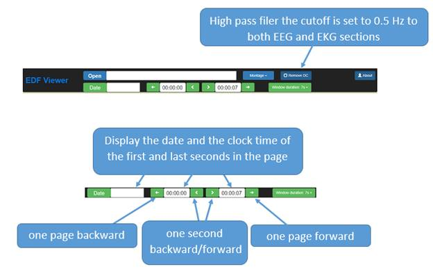
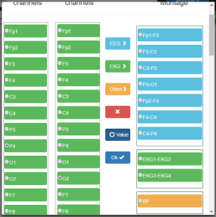
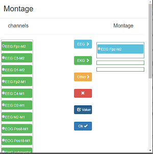
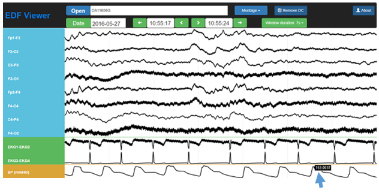

Introduction:
The viewer is written using javascript, HTML and CSS, it runs completely on the client side using the browser and it can run offline.
Navigation bar:

Montage :
Montage tab opens once the file is chosen, and it can be called from

It allows to arrange channels into 3 categories:
EEG, EKG and others
the EEG and EKG categories can be filtered using a high pass filter through unlike “others”. Channels in these categories could be referenced to another channel or could be display as it was recorded in the EDF file after scaling by checking before selecting them.

“Others” category is for polygraph and any additional channels, moving the cruiser over the channel is going to display the value of the channel at that point

To remove a channel from the montage just choose it from montage column and click .
Contact :
Bilal Zonjy, MD
Email: bxz142@case.edu
License :